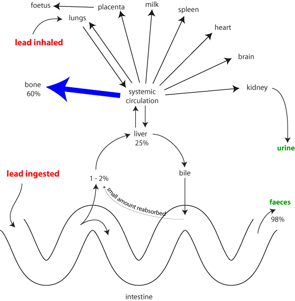

Lead poisoning of animals and humans has been common for centuries. In New Zealand many cases of lead poisoning have been reported and at its peak about 200 animal cases were reported annually. For a variety of reasons the incidence has dropped in recent years, but it is still a toxicological problem of great importance to the practising veterinarian. Lead poisoning has been reported in most domestic animals and humans. Most cases reported in NZ recently (1990-1999) have been in cattle and dogs. Traditionally cattle were most commonly affected by lead poisoning, however most cases more recently have occurred in dogs.
Lead is found naturally as sulphide, oxide or carbonate ores, and in association with silver. Early craftsmen used lead for a variety of domestic articles, as the element was easy to mine and work with utensils. The combination of lead and tin produced pewter which was the principal material for eating utensils of the wealthy. Since then lead has been used in a variety of ways so that the potential sources of danger to domestic animals is considerable.
Lead based paint is probably still the most significant cause of lead poisoning, even though its use has been replaced by titanium dioxide in many cases. Earlier paints contained very high levels of lead and were used as undercoats (white lead, basic lead carbonate) and primers (red lead, triplumbic tetroxide). Lead was also used in exterior paints. Lead poisoning was frequently recorded in cattle in NZ where lead paint had been used on gates in calf sheds etc. The chewing habits of cattle frequently led to their death.
Nowadays weathering of older homes, redecorating and dismantling of buildings have increased the availability of lead to dogs, cats and humans, by the ingestion of small particles of inhaled dust. Hence the now more frequent occurrence of both clinical and subclinical lead poisoning in dogs rather than cattle. Lead poisoning has been reported in caged birds where imported galvanised mesh contaminated with lead was used. Poisoning may also occur where wire cages are soldered with lead alloys.
Lead has also been used in the manufacture of linoleum, golf balls, putty and other building materials.
Soil Contamination In many urban areas the widespread use of lead over many years has caused considerable elevation in soil levels of lead. In rural areas levels may be as low as 10 to 20 mg/kg while in some city soils over 2000 mg/kg of lead has been recorded. Under some conditions lead contamination at shooting ranges has been associated with illness in horses.
Industrial and Atmospheric Lead Industrial operations involving lead and lead mining have caused losses particularly of farm animals. Lead from these sources is deposited through the atmosphere and in the soil in the inorganic form, which is only slightly soluble. However the solubility is increased in very acidic soils.
Recent concern with the environment has shown that lead is eventually leaked into the sea and may enter the marine cycle. The lead found in arctic snow is thought to reflect the increasing contamination of water and air.
The mining and smelting of lead during the nineteenth century was the cause of considerable human illness and death. Lead colic with its severe debilitating pain was the most common sign, but the disabling palsies such as wrist and ankle drop or "The dangles" were also observed. There was however little mention of animal losses in these areas. Horses and ponies were used extensively in mining and it is concluded that their loss and illness were accepted.
Lead in petrol Tetra ethyl lead has been added to petrol for many years. American studies conclude that lead from this source produces a major part of the lead burden in urban areas. In fact up to 80% of atmospheric lead comes from this source and between 7% and 40% of the lead in the blood of human subjects can be attributed to the use of leaded petrol.
Vegetation near a busy highway may contain up to 500 mg/kg of lead from exhaust fumes. The significance of this source of lead and clinical lead poisoning is uncertain, but it is nevertheless a source of lead and is likely to contribute to lead levels that may ultimately lead to toxicosis. Although lead is no longer used in petrol in NZ, the amount of lead in the environment from past use is unknown.
Metallic lead Lead has been and continues to be used in a variety of products particularly car batteries, lead piping, shotgun pellets, ceramics, solder and asphalt. Access to such materials has frequently been associated with toxicosis in animals. Lead piping was particularly dangerous when the water flowing in it was plumbo solvent (acid). Lead shotgun pellets are being phased out for duck shooting, but are likely to be around for other purposes for the forseeable future.
Lead in oil Lead has proved a major hazard in the vicinity of oil fields and engine sump oil may contain over 500 mg of lead per 100 ml of oil. There are numerous reports of cattle having been poisoned from this source. The use of unleaded petrol should reduce this risk.
Miscellaneous sources Lead is found in a number of other, mainly obselete, products, most of which are used infrequently e.g. boiled linseed oil, lead arsenatein fruit tree sprays and lead acetate(sugar of lead).
There are two major routes of absorption, the alimentary tract, in particular and the respiratory tract. Inorganic lead does not readily penetrate the skin, but the organic forms (tetramethyl and tetraethyl lead) can be absorbed percutaneously.
Gastrointestinal absorption is the most common route, although only a small amount (1 2%, maximally 10%) of the inorganic lead ingested is absorbed. The remainder is excreted in the faeces (see Figure 2). A small fraction of ingested lead enters the lymphatic system, but the majority enters the portal circulation. In man, as much as 37% of the inhaled lead is absorbed and the rest remains permanently in the lungs. Microparticles may be absorbed completely. Diets deficient in calcium, zinc or protein may enhance lead absorption.
Distribution and Storage
The majority of circulating lead is bound to the erythrocytes (85-90% sheep and 65-70% cattle), the remainder is plasma bound with a minute free fraction. The release of lead from red cells is slow, but it is probably the unbound fraction that produces toxicity. Lead increases erythrocyte fragility and suppresses haematopoiesis so that in all species chronic exposure to lead produces a mild anaemia. The bone marrow response is to produce immature and stippled cells. The lead alters the ribosomal RNA in these cells so that the ribosomes remain as the cells mature. It is this RNA precipitate that becomes visible as basophilic stippling when the erythrocytes are stained with Romanosky stains (an aid to diagnosis of lead poisoning see later). Other blood changes include anisocytosis, polychromasia, and increased numbers of reticulocytes and nucleated erythrocytes.
Absorbed lead is distributed to all soft tissues particularly the liver and renal cortex. In the liver the lead is bound but is slowly released into the blood and excreted to the bile.
Nervous Tissue Lead binds to the endothelial cells of brain capillaries. This leads to an increased permeability of these vessels and brain oedema. The cells of young animals are most severely affected. In cattle the most susceptible areas of the brain are the tips of the cerebral gyrae where laminar malacia and cavitation occur.
Bone Circulating lead is inactivated by bone deposition, particularly in growth regions. This process occurs when the animal has had long term exposure to lead and it represents a gradual redistribution of lead from soft tissues to bone. If lead intake ceases then bone lead is released and the blood lead may remain elevated for months.
The release of lead from the bones is also affected by a number of factors including, pregnancy, dietary imbalances, illness, severe exercise and following the use of corticosteroids. Low calcium diets and increased vitamin intake may also cause lead release.When bone is saturated with lead, toxicosis may suddenly develop due to the release of lead into the blood and soft tissues.
Placenta Lead readily penetrates the placenta and may damage the foetus resulting in teratogenesis, intrauterine death and abortion.
Muscle High levels of lead cause muscle stress and fatigue and some paralysis and smooth muscle dysfunction, which appears as colic and constipation (Lead colic of humans).
Excretion
The main excretion of ingested lead is via active transport into the bile and finally into the faeces. However absorbed lead is excreted through the bile duct, urinary system, milk, sweat and saliva.
Excretion by the tubular epithelium of the kidneys occurs because lead is trapped as intranuclear inclusion bodies. Normal urine levels of lead are reached many months (12 18 months) after the exposure to lead ceases.
Many factors influence an animal's tolerance to ingested lead. The morbidity rate is usually 10 15% but the mortality rate is often high, 75 100%.
AgeYoung animals are generally more susceptible to lead poisoning than adults. Probably this is due to immaturity of the blood brain barrier and the great vulnerability of growing tissues, particularly bone.
Species Calves and puppies are very commonly poisoned; both are rather non selective eaters and tend to chew a variety of objects. Cats are not commonly poisoned, but paint particles and dust on fur can cause poisoning as a consequence of their licking habit.
Horses are less susceptible than cattle and goats. Swine and chickens appear to be more resistant to lead toxicity.
Rate of Ingestion If large quantities of lead are consumed rapidly a sudden rise in blood lead occurs, which causes acute clinical signs. If small quantities of lead are consistently ingested the majority is tissue bound. Sudden stress may release this and cause clinical signs of lead poisoning.
State of Lead Lead in oils and grease is more toxic than metallic lead and lead salts.
Route of Absorption The oral route of administration is the most serious. Also the absorption of lead ingested orally is influenced by other dietary factors e.g. high fat diets in dogs facilitate lead encephalopathy.
Environmental Effects Elsewhere in the world the prevalence of lead poisoning has been known to increase in urban dogs and children during the summer months. This may be due to a greater outdoor exposure or the absorption of higher levels of Vitamin D, or both. However in both New Zealand and Australia the winter incidence has been higher.
The acute oral lethal dose and the total toxic dose of lead required for some domestic animals
| Acute oral lethal single dose (mg/kg BW) | Total dose of lead acetate | |
|---|---|---|
| Cattle | 50-600 | 50-100 |
| Horses | 900 | 500-750 |
| Sheep | 600-800 | 20-40 |
| Goats | 400-500 | 20-40 |
| Swine | 300 | 10-25 |
| Dogs | 300 | 10-25 |
| Poultry | 160-600 |
Normal levels of lead.
| Drinking Water | <0.5 mg/l |
| Uncontaminated fodder | 0.1-10 mg/kg (DM) |
| Roadside fodder | 10-20 mg/kg |
| Smelting plant contamination | 110-3200 mg/kg |
| Soil | 2-100 mg/kg |
The exact mechanism of toxicity on a molecular level is not known. The toxic effects of lead generally affect the nervous system, gastrointestinal tract and haematopoietic system. The possible mechanisms that influence nervous signs are capillary damage and neuron necrosis, demyelination in the peripheral nerves, possible interference with calcium used to activate protein kinase C in brain capillaries and interference with the action of gamma aminobutyric acid (GABA), dopamine uptake by synaptosomes, and cholinergic function in association with decrease extracellular calcium. The cause of the gastrointestinal signs is not known. The haematopoietic effects are due to the inhibition of key enzymes in the haem synthesis pathway. These include the inhibition of d aminolevulinic acid dehydrase (d ALAD), haem synthetase, and ferrochelatase. The inhibition of these enzymes allows the accumulation of haem precursors in the blood. Apparently the failure of haem synthetase to insert iron atoms leaves protoporphyrin free to chelate with zinc. An increase in zinc protoporphyrin occurs 1 2 weeks after exposure to lead. Inhibition of the enzyme 5¢ nucleotidase allows the retention of nucleic acid fragments and ribosomes, which results in basophilic stippling and increased red blood cell fragility. These changes are summarised below.
* enzymes inhibited by lead are in intalics
Lead (and cadmium, mercury and other metals) can also cause some immunosuppression by reducing the production of antibodies against certain viral and bacterial agents, which results in a predisposition to infectious disease.
Both acute and subacute poisoning occurs. The acute form is more likely to be seen in calves.
Acute This form occurs frequently in calves. Animals are affected within a few hours to 2 days after ingestion of the poison. The onset of signs is very sudden, animals may just be found dead. Death may occur 1-2 hours after a fatal dose and up to 24 hours after onset of the clinical signs. Surveillance reports that Ruakura Animal Health Laboratory recorded 63 cases of lead poisoning in cattle from 1989-1993. In 23 cases sudden death occurred. In the remainder, neurological signs were noted.
Initial signs are staggering, bellowing, champing of the jaws, frothing at the mouth and eye rolling. CNS signs predominate. Convulsions develop and are intermittent becoming tonic and clonic. The pupils become dilated; opisthotonos and muscle tremor especially of the head and neck are common features. Hyperaesthesia to touch and sound with apparent blindness is seen. Head pressing, charging objects blindly will occur particularly with older animals. Cardinal signs are increased. Death occurs from asphyxiation.
Subacute This form occurs mainly in adult cattle with the following summarised features.
Lead poisoning of sheep is usually manifest by a subacute syndrome as in cattle.
Ruminants are resistant to chronic lead poisoning but two syndromes of posterior paresis have been described in young lambs in lead mining areas. Impaired gait, osteoporosis and unthriftiness were features of one syndrome. In the other, gait abnormalities were reported with incomplete flexion of joints and limbs.
The signs in horses are less marked than cattle; unthriftiness leading to paralysis and sudden death has been reported. Extensive paralysis of long tract nerves is reported leading to paralysis of the vocal cords and severe dyspnoea.
A high incidence of lead poisoning in dogs is now recognised. In most epidemiological studies, acute lead poisoning occurred in dogs under one year of age. Because of the range of symptoms recorded differential diagnosis with other diseases of dogs is important. These may include post distemper encephalitis, canine hepatitis, canine hysteria, hookworm infections and others. Symptoms recorded include those involving the gastrointestinal system and nervous system (central and peripheral). While one or both systems may be involved the signs usually progress from gastrointestinal to nervous involvement.
Gastrointestinal signs:
Nervous signs:
N.B As a result of lead poisoning behavioural changes have been reported frequently in working dogs in Australia and New Zealand and have been characterised by a lack of concentration at work. Dogs usually leave the working area after a short period and seek refuge under a vehicle or kennel. Removal of such dogs from their ingested source of lead has led to a recovery of normal behaviour. As well as these relatively mild behavioural changes affected dogs may become vicious and aggressive. There are now many reports dealing with the effects of lead and changes in the behaviour of dogs.
Although cats are rarely diagnosed with lead poisoning, this may be due to the lack of clear measures with which to recognise toxicity. A study of urban cats in Sydney indicates that the most consistent clinical finding with lead poisoning is anorexia (12/13). In comparison with 91 normal healthy cats, the study found that the mean blood lead and urinary d ALA levels were 0.62 ± 0.25 mmol/l (range 0.07-1.43 mmol/l) and 32±33 mmol/l (range 0.6-205 mmol/l) respectively. Based on the authors findings they indicate that 87 mmol/l may be a reasonable upper reference level of urinary d ALA for urban cats. Bear in mind that blood lead levels above or below this value do not prove or disprove lead poisoning without further proof (e.g. clinical signs, increased d ALA levels). In the urban cat blood lead levels of greater than 1.5 mmol/l (>0.3mg/l) with appropriate clinical signs are highly suggestive of lead poisoning.
The most frequently reported clinical signs in urban cats are anorexia, vomiting, depression and lethargy.
There are numerous reports of lead poisoning in birds and poultry. The most common sources of lead for poultry and birds include contaminated feed grit (chickens), lead shot (ducks and wading birds) meat contaminated by lead shot and disintegrated bullets (falcons, sparrowhawks, and Canada geese). In most instances lead has been retained in the gizzard resulting in the continuous absorption of lead over a long period of time.
Clinical signs seen have been:
The gross findings from a post mortem examination of an animal which dies from acute lead poisoning are usually non specific. Careful examination of the gastrointestinal tract may reveal paint flakes or other lead containing substances. The glandular stomach and intestines are usually inflamed and there is often a greenish diarrhoea. The kidneys are swollen with oedema, so that the gyrae are flattened and discoloured. White bands are sometimes found in the metaphyses in the transversely transected long bones of immature dogs that have been poisoned with lead. If the necropsy is not performed immediately the muscles develop a dirty green or red discolouration.
Microscopically the severity of the lesions is variable, depending on the duration of the exposure and the illness. The kidneys show damage to the epithelial cells of the proximal convoluted renal tubules, with a loss of nephrons and a focal increase in the interstitial connective tissue, which becomes infiltrated with lymphocytes and other mononuclear inflammatory cells.
Acid fast, intranuclear inclusion bodies are inconsistently found in kidney and liver cells, but the presence of these inclusion bodies is much more likely in osteoclasts.
The cerebral lesions in chronically intoxicated animals range from status spongiosus, astrocytic swelling, and nerve cell degeneration to severe cavitation and vascular proliferation. There is usually a peripheral neuropathy as well.
Samples for Analysis from Post Mortem
Essentially, lead estimations are performed on gut contents, kidney and liver. The kidney cortex is the preferred tissue for the diagnosis of lead poisoning. Histopathology of the brain may be useful.
< id="diag">DiagnosisThe confirmed diagnosis of lead poisoning presents some difficulties. There are two categories of laboratory tests used in the detection of increased lead contact. Measurement of tissue lead content and measurement of the metabolic effects caused by lead. Beyond question when bone, kidney or liver is available for analysis, lead poisoning can be positively identified. Unfortunately, when the animal is alive, there is no one quantitative evaluation that can adequately define the body lead burden, nor is there a single metabolic measurement that characterises all the effects of lead.
In most instances the diagnosis is achieved by blood lead measurements (BPb) following clinical signs and BPb is currently still accepted as the best single laboratory test for the identification of increased Pb absorption following poisoning.
Diagnostic tests currently used are as follows. Some tests are more relevant for dogs than cattle and this is emphasised.
The presence of many nucleated erythrocytes, without a severe anaemia is strongly suggestive of lead poisoning. Although studies vary, in general, roughly half the small animals affected by lead poisoning will have nucleated red blood cells (nRBC) (5 40 nRBCs/100 white blood cells) and about 25% will have basophilic stippling.
Although no disease of dogs other than lead poisoning has been found in which basophilic stippled erythrocytes are regularly more numerous than in healthy dogs, basophilic stippling is also reported in the following conditions.
Basophilic stippling (Zook et al, 1976)
| Conditions in which Basophilic Stippling occurs | Percentage with Basophilic Stippled Erythrocytes |
|---|---|
| Healthy dogs | 28 |
| Distemper | 37 |
| Thallium poisoning | 25 |
| Leptospirosis | 12 |
| Infectious hepatitis | 0 |
| Fibrosing hepatitis | 25 |
| Diabetes mellitus | 33 |
| Malignant lymphoma | 23 |
| Haemangiosarcoma | 42 |
| Idiopathic thrombocytopaenia purpura | 33 |
| Autoimmune haemolytic anaemia | 25 |
| Lead poisoning | 94 |
Therefore basophilic stippled erythrocytes in blood smears supports the diagnosis of lead poisoning, but its absence does not rule out lead intoxication in dogs and cattle.
For examination, blood smears must be made directly and not from EDTA or oxalated blood as these will adversely affect the stippling. Also, in the staining process care must be taken not to use overly acidic buffers and not to fix the smears with alcohol.
Mild leucopaenia may also be seen in the smears. Signs of a developing anaemia may also be present.
There are a number of methods used for the estimation of BPb so that it is advisable to contact the diagnostic laboratory before sending samples. Usually a 10ml sample in a heparin anticoagulant and 20ml-30ml of clotted blood is adequate. Elevated BPb levels in the presence of clinical signs confirms a diagnosis of lead poisoning, however the severity of signs are not related to blood lead levels which may fluctuate daily. If the blood lead levels are questionable, a urinary lead test before and 24 hours after chelation therapy may be useful. A tenfold increase in urine lead values is seen in lead poisoning. Alternatively, a significant decrease in ? aminolevulinic acid (? ALA) concentration in urine after chelation therapy is suggestive of lead poisoning.
Faecal lead levels
Faecal levels of lead represent unabsorbed or excreted lead derived from bone deposits and are of limited value unless considered in conjunction with BPb. If faecal levels are high assume lead has been ingested in the preceding 2 or 3 weeks. High blood levels may be maintained for months. If these are high and faecal levels low then lead intake has not been recent.
Lead affects the haem synthesis of all the haem producing cells. d amino levulinic acid is one of the precursors of haem which requires the enzyme ALA dehydrase to incorporate it into the system. Lead inhibits the activity of this enzyme, so that the concentration of d ALA increases in the systemic circulation, until it is removed from the circulation and excreted via the kidney.
There is poor correlation between the blood lead concentration and urinary d ALA levels, but the blood lead is closely related to the exposure to lead and may not correlate with clinical signs, whereas the urinary d ALA reflects the susceptibility of individual animals to lead intoxication and is related to the presence of clinical signs. Urinary d ALA may also be raised by chronic liver disease and may be reduced by high dietary zinc levels.
Urine samples should be analysed as soon as possible. If not performed soon after collection the urine sample should be adjusted to neutral pH and stored at 4°C.
Urine analysis from lead intoxicated animals may show hyaline and granular casts, proteinuria and glucosuria. Initially the kidneys concentrate urine well but as lead toxicosis progresses damage to the proximal convoluted tubules occurs and urine cannot be concentrated.
In small animals (dogs and cats) radiographs may reveal radiodense objects in the gastrointestinal tract but more important in chronic lead poisoning "lead lines" may appear in the metaphyses of long bones.
In lead poisoning bone marrow samples show increased numbers of segmented neutrophils and an increased myeloid erythroid ratio. Lead either has a direct suppressing effect on the erythroid series, allowing the myeloid series to dominate or it interferes with the maturation and release of segmented neutrophils from the bone marrow, into the circulation. An increased myeloid:erythroid ratio is not considered to be diagnostic of lead poisoning, unless other variables such as blood lead levels are also elevated.
Lead poisoned animals show various degrees of irregular, generalised, slow wave activity with an increased wave amplitude. These findings indicate diffuse involvement of the brain and similar changes have been recorded from dogs with inflammatory and degenerative disease of the brain from other causes.
Recording the EEG changes is of value for estimating the degree of brain involvement, and to assess the effectiveness of chelation treatment. The changes are similar in both anaethetised and nonanaethetised dogs.
Lead tissue and diet levels
| Cattle: Tissue Levels | |||||
|---|---|---|---|---|---|
| Diet mg/kg |
Liver mg/kg wet |
Kidney mg/kg wet |
Faeces mg/kg wet |
Blood mg/L |
|
| Normal | <1.0 | 0.1-1.0 | 0.2-2.0 | 2.0-35 | 0.01-0.2 |
| High | 5.0-20 | 2.0-10 | 3.0-20 | 30-100 | 0.3-0.4 |
| Toxic | >100 | 5.0-300 | 5.0-700 | >200 | 0.5 |
| Dogs: Tissue Levels | |||||
|---|---|---|---|---|---|
| Liver mg/kg wet |
Kidney mg/kg wet |
Blood mg/L |
Hair mg/kg |
Bone (rib) mg/kg |
|
| Normal | 0.1-3.5 | 0.1-2.5 | 0.01-0.10 | 0-88 | 2.0-5.0 |
| High | 3.6-5.0 | 5.0-10.0 | 0.30-0.80 | 60-87 | 20-40 |
| Toxic | 50-200 | 10.0-50.0 | 0.60-7.40 | >88 | ? |
| urine | lead | d amino levulinic acid | |
|---|---|---|---|
| Normal | <0.5-50 | 0.000-0.004 | <38 |
| Toxic (before therapy) | >75 | 0.016-0.020 | >100 |
| (24 hrs after therapy) | 820-11000 | 0.015-0.040 | >100 |
| Poultry/Chickens: Tissue Levels | |||||||||
|---|---|---|---|---|---|---|---|---|---|
| Diet mg/kg |
Liver mg/kg wet |
Kidney mg/kg wet |
Blood mg/L |
Muscle mg/kg wet |
Brain ppm wet wt |
Bone ppm |
Erythrocyte ALAD* 38° C units |
Pancreas ppm wet wt |
|
| Normal | 1-10 | 0.1-0.5 | 0.1-1.0 | 0.04-0.05 | 0.09-0.30 | <1 | 50 | 300-700 | 0.5 |
| High | 200-1000 | 5.0-10.0 | 5.0-12.0 | 2.00-6.30 | 0.40? | 7.0-10.0 | 150-400 | 5-90 | 10.0 |
| Toxic | 5000 | 18-19 | 20-150 | 4.00-12.0 | 12-15 | >400 | 0 | 20.0 | |
* delta aminolevulinic acid dehydratase
Some diseases producing similar nervous signs in cattle are:
It is important to remove the animal from the source of intoxication if possible. Most large animals have to be treated in the same environment in which they became poisoned, so that identification of the source is essential. Often just the removal of the animal from the contaminated environment alleviates the clinical signs. However if there are any neurological signs, then the animal should always be treated, because of the possibility of residual damage.
The treatment of lead poisoning may be difficult. Acute lead poisoning of cattle is almost always fatal. In cattle, saline purgatives (magnesium sulphate 500 1000g) as a drench may be helpful). The soluble lead salts will be precipitated as insoluble lead sulphate and the cathartic action is also valuable. When large flakes of paint have been ingested such treatment is of limited value.
Thiamine (250-1000 mg/day for 5 days) promotes recovery in cattle.
Phenobarbitone (30 mg/kg IV to effect) or chloral hydrate (50-70 mg/kg IV as 5 or 7% solution) are recommended for seizure control.
Lead is immunosuppressive which may necessitate treatment for bacterial infections.
Details of chelating agents see under dogs and cats below.
Emetics, enemas and cathartics will help eliminate lead and lead objects. Magnesium sulphate is again a good choice of cathartic. In less acute cases, administer egg white to complex with the lead, followed by an emetic and then a cathartic to remove the complex as some of its compounds are soluble in excess albumin. Tannic acid or strong tea (small animals 200-500mg in 30-60mls water) followed by an emetic or purgative to ensure prompt removal of the tannates may also be given.
N.B. It is important to ensure that all lead is removed from the alimentary tract before starting chelation therapy, as these agents increase the absorption of lead.
Chelating agents are used to remove lead from soft tissues by forming non toxic complexes, which can then be rapidly excreted in urine or bile. The main chelating agents are calcium EDTA, calcium disodium EDTA,D penicillamine and dimercaptosuccinic acid (DMSA). Dimercaprol also known as BAL (British Antilewisite) will chelate lead but it is potentially nephrotoxic and is painful, particularly if the drug is not injected deep into the muscle.
This is administered as a calcium disodium salt to avoid a hypocalcaemic crisis. The disodium salt, which carries a similar name, is not suitable for therapeutic use. Calcium EDTA is available as a 20% solution in 5ml ampoules (total 1gm). It should be diluted in isotonic saline in a 5% dextrose solution, to attain a final concentration of less than 1% (10mg/ml) calcium EDTA. If a greater concentration is used, it causes painful reactions at the injection site. Calcium EDTA is poorly absorbed from the gastrointestinal tract, but is rapidly absorbed from routes of parenteral administration. The subcutaneous injection ensures a slower absorption and longer duration of action than is obtained following intravenous administration.
The ionic nature of CaEDTA prevents it from penetrating cell membranes (i.e. erythrocytes) easily, and only small amounts can cross the blood brain barrier, so the drug is confined to the extracellular fluid. CaEDTA is excreted unchanged by the kidney and has a half life of one hour. There is an initial rapid decline in the blood lead level after CaEDTA therapy, due to the removal of weakly bound or extracellular lead. This is followed by a leveling off period after 2-3 days, which corresponds to the removal and equilibration of the strongly bound or intracellular lead. This lag phase is slow, and necessitates multiple treatments of CaEDTA.
Calcium EDTA is relatively safe to use but toxic reactions have been reported in a number of species. These are characterised by depression, abdominal discomfort, vomiting and diarrhoea. A necrotising nephrosis of the proximal convoluted tubules develops with long term therapy. CaEDTA may also cause damage to the cardiac muscles, kidney and bone marrow if given too rapidly. The clinical signs of toxicosis are related to the chelation of trace metals, particularly zinc, and the gastrointestinal effects of CaEDTA toxicity can be protected against by using the zinc salt of EDTA. However, this preparation is not available commercially, although dogs showing signs of CaEDTA toxicity may benefit from zinc supplementation. To prevent the development of a CaEDTA toxicosis the dosage regimens are limited to five days.
Dose rate recommended
CaEDTA should be given at 25 mg/kg administered subcutaneously every 6 hours for 2-5 days. The daily dose in small animals should not exceed 2g per day and do not treat for more than 5 consecutive days.
CaEDTA may also be used in large animals (cattle) at 55mg/kg given twice daily, subcutaneously or by slow intravenous injection.
There should be a clinical improvement within 24-48 hours after commencing therapy. Animals which respond slowly or have a pretreatment blood lead concentration of more than 1.0mg/l, require a second treatment regimen. Measuring blood lead during the treatment period is not necessary and may be confusing as the CaEDTA does not chelate lead inside erythrocytes and so levels may not drop below toxic levels despite the therapy. Clinical assessment is more accurate in evaluating the initial response to therapy. A blood lead concentration taken 2-3 weeks after treatment may be helpful in evaluating the treatment or for indicating re exposure to the source of the lead.
Dimethylcysteine the D isomer of penicillamine, is an orally administered chelator. Although it is expensive, it has the advantage that small animals can be treated at home. If this is the therapy of choice, it is important to remove the source of lead, as d penicillamine will promote intestinal lead absorption. Penicillamine is rapidly absorbed and mainly excreted by the kidney. Long term administration may deplete the animal's body stores of copper.
Dose & Administration
Penicillamine should be given at 100 mg/kg BW/day in a 1 2 week course, separated by one week intervals. The drug is given on an empty stomach to prevent chelation of dietary metals and the daily doses may be divided and given 6 8 hourly, to reduce the adverse effects of vomiting, listlessness and anorexia. It has been found that lower doses of 33-55 mg/kg/day are better tolerated by dogs, and may be just as efficacious in the elimination of body lead stores. The contents of the penicillamine capsule may be dissolved in fruit juice (penicillamine is stable in acid pH), for ease of administration. Antiemetics given 30-60 minutes before dosing may curb any adverse gastrointestinal effects.
Penicillamine is just as effective as CaEDTA in reducing blood lead. It is recommended that calcium EDTA is given for 1-2 days, and when the signs of lead toxicity subside, the animal can be discharged with D penicillamine.
Vomiting, listlessness, anorexia or marked neurological disorders, are contraindications for use in small animals.
Dimercaptosuccinic acid (DMSA), an orally administered chelator, has been shown to be safe and effective in reducing blood lead concentration in dogs. DMSA has been used in the treatment of lead and other metal poisonings in the People’s Republic of China and Russia since the 1950’s. It has been approved by the Food and Drug Administration (USA) for treating lead poisoning in children. Unfortunately the drug is not currently licensed for use in New Zealand. It is more effective than CaEDTA or penicillamine and the succimer has a greater margin of safety. Beagles given 105 mg/kg for 22 weeks had no signs of toxicity.
Dose and Administration
Dogs treated with 10 mg/kg PO every 8 hours for 10 days respond well to treatment.
The gastrointestinal signs of lead intoxication usually subside with chelation therapy and do not require further treatment. Cerebral oedema is the primary cause of the neurological signs, and these can be treated with 20% mannitol (1 to 2 grams/kg body weight, slowly i/v) or dexamethasone (1-2 mg/kg s/c or i/m). Diazepam or pentobarbitone may be required to control convulsions. Thiamine therapy in lead poisoned calves has caused a dramatic reduction in clinical signs and reduced the concentration of lead in tissue. The mechanism of this thiamine treatment is unknown. Fluids may be required for dehydration.
If there is an improvement within 24-48 hours, then the prognosis is favourable.
Behavioural changes, visual motor impairment, recurrent seizures and lack of concentration may be permanent in both dogs and children, due to the permanent damage of small capillaries in the brain and death of some of the neurones. Chronic nephritis has also been reported in man.
Several investigators have found that the blood levels of the family dog frequently parallel those of children, as they share the same environment and often have the same access to the lead source. In fact, dogs may be more sensitive to lead toxicity than children, and as such might serve as sentinels for human exposure.
Blakeley, B.R. (1984). A retrospective study of lead poisoning in cattle. Vet Hum Toxicol. 26 (6): 505 507.
Bloom, H., Moller, B.N. and Shenman, G. (1976). A survey of lead levels in dogs and cats. Aust Vet J. 52:312 216.
Bratton, G.R. (1984). Laboratory diagnosis of lead poisoning in cattle. A reassessment and review. Vet Hum Toxicol 26(5): 387 392.
Bushnell, P.J. (1986). Hazards to health from environmental lead exposure. A review of recent literature. Vet Hum Toxicol 28(3): 255 261.
Davis, L.E. (1984). Clinical management of lead poisoning. J AmVet Med Assoc. 184:858 860.
Frape, D.L. and Pringle, J.D. (1984). Toxic manifestations in a dairy herd consuming haylage contaminated by lead. Vet Rec. 114: 615 616.
Hamir, A.N. (1981). Lead poisoning of dogs in Australia. Vet Rec. 108:438 439.
Hamir, A.N., Sullivan, N.D. and Handson, P.D. (1982). The effects of age and diet on the absorption of lead from the gastrointestinal tract of dogs. Aust vet J. 58: 266 267.
Hamir, A.N., Sullivan, N.D., Wilkinson, J.S. and Handson, P.D. (1983). Blood lead and urinary delta amino levulinic acid (U ALA) in the diagnosis of lead toxicosis of dogs. Aust Vet J. 60:372 373.
Kowalczyk, D.F. (1984). Clinical management of lead poisoning. J AmVet Med Assoc. 184:858 860.
MacDonald, J.W. and Randall, C.J. (1983). Lead poisoning in captive birds of prey. Vet Rec. 113:65 66.
McLeavey, B.J. (1977). Lead poisoning in dogs. N Z vet J. 25:395 396.
Maddison, J.E., Hawke, C. G. and Watson, A.D.J. (1993) Parameters of Lead Exposure and Clinicopathology of Lead Toxicity in Urban Cats. Aust Vet Pract. 23(4): 210 216.
Nicholls, T.J. and Handson, P.D. (1983). Behavioural change associated with chronic lead poisoning in working dogs. Vet Rec. 112:607.
Prescott, C.W. (1983). Clinical findings in dogs and cats with lead poisoning. Aust Vet J. 60:270 271.
Salisbury, R.M., Staples, E.L.J. and Sutton, M. (1958). Lead poisoning of chickens. N Z vet J. 6:2 7.
Zook, B.C., Carpenter, J.L. and Leeds, E.B. (1960). Lead poisoning in dogs. J Am Vet Med Assoc. 155:1329 1342.
Zook, B.C., Kopito, L., Carpenter, J.L., Cramer, D.V. and Shwachman, H. (1972). Lead poisoning in dogs: Analysis of blood, urine, hair and liver for lead. Am J Vet Res. 33:903 909.
Zook, B.C., McConnell, G. and Gilmore, C.E. (1970). Basophilic stippling or erythrocytes in dogs with special reference to lead poisoning. J Am Vet Med Assoc. 157:2092 2099.
Surveillance 1974 1(1):25 Lead poisoning
Surveillance 1974 1(1):20 Golf balls a hazard in themselves.
Surveillance 1974 1(1):15 Lead and arsenic poisoning of cattle.
Surveillance 1974 1(4):10 More on lead poisoning
Surveillance 1975 2(1):12 The good oil on lead.
Surveillance 1975 2(3):25 Lead poisoning in seagulls.
Surveillance 1975 2(4): 6 Lead poisoning.
Surveillance 1977 4(3):23 Lead poisoning.
Surveillance 1978 5(1):17 Lead poisoning in captured deer.
Surveillance 1978 5(1):19 Lead poisoning a weka.
Surveillance 1978 5(4):18 Lead poisoning in young animals.
Surveillance 1978 5(5):22 Lead poisoning in calves.
Surveillance 1978 5(5):18 A case of chronic lead poisoning.
Surveillance 1979 6(1):4 5 Lead poisoning in cats.
Surveillance 1980 7(5):15 Sump oil a cause of lead poisoning in cattle.
Surveillance 1981 8(1):17 Lead poisoning due to airborne pollution.
Surveillance 1986 13(2):26 Lead poisoning in Canada geese.
Surveillance 1990 17(1): 3 Lead poisoning in cattle
Surveillance 1993 20(1): 3 Lead poisoning in calves
Surveillance 1993 20(3):30 Lead poisoning in caged birds
Surveillance 1993 20(4): 3 Lead poisoning in cattle
Surveillance 1999 26(1):15 Lead poisoning in a dog